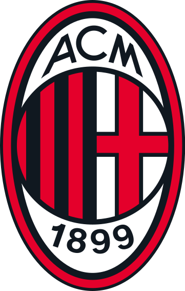
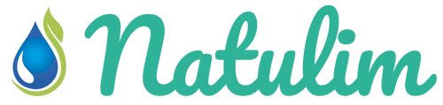
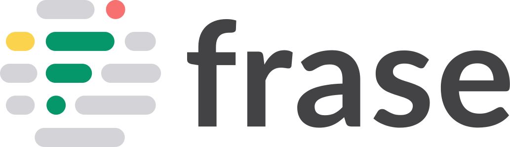

Madrid · Available for remote opportunities
I find out what matters to customers, then turn it into ads worth testing.
I start with customer reviews, search data and the ads already running. From there, I build the angles and briefs, test them, and use what I learn to decide what to make next.
See how I workSelected brands I’ve worked with




Case 01 / CGI Green
US DTC · Meta · Google · Email
CGI Green needed the right audience, message and page. Not more spend.
Meta spend had increased by roughly $4K a month. New customers had not. A 90-day review showed that a third of Meta spend was reaching existing buyers, while 42% of clicks went to a page converting at 1.7%.
6.6×
Revenue per visitor on angle-led pages
$5.52 vs $0.83 on the default collection page
What I built
Four buyer groups from Shopify data
Each group had its own reason to buy, objection and role in prospecting or retention.
Nine objections turned into angles and hooks
The language came from reviews, search queries and the brand's own customers.
A dedicated page for each offer
Taste, bundle value, the daily routine and product choice each needed a different page.
Reporting tied back to Shopify
Daily MER, a weekly top-ads review and a monthly report that reconciled with actual sales.
Case 02 / AC Milan
Official online store · Meta · Google · Global
The player video got the clicks. The product static sold the shirt.
A 15-second player video reached a 13% CTR and recorded no purchases. A plain Third Kit static returned 3.2×. That gap became the basis for a creative testing system used across each new kit launch.
3.2×
ROAS from a plain product static
The high-click player video recorded no tracked sales
What I built
Six creative territories
Product detail, full outfit, fan ritual, heritage, launch urgency and creator-native content.
A repeatable kit-launch matrix
Three kits across two languages and three placements, with player-led and product-led variants.
Names that carry the test
Each ad records the market, format, angle, player, kit and landing page, so results group cleanly.
QA and fixed review rules
Pre-launch checks, weekly pause rules and a monthly read on why ads worked and what to make next.
04 / More results
Selected account results.
A few other accounts where I owned the decisions, not only the reporting.
01
DTC growth · Acquisition and retention
Annual revenue grew 500% to $1M
Monthly media spend reached $110K while the account maintained a 3.5× ROAS and 4.4 MER.
- Work
- Acquisition, creative and funnel
- Scale
- Up to $110K in monthly spend
- Result
- 3.5× ROAS and 4.4 MER
500%Revenue growth
02
Scaling Davids · Multi-client portfolio
$5M+ generated across client accounts
I led client strategy, performance reviews, creative planning and the team producing the work.
- Work
- Client strategy and creative planning
- Scale
- Accounts above $350K annual spend
- Result
- $5M+ revenue and 5.0× average ROAS
5.0×Average ROAS
05 / Client perspective
Anton Cardinal on working with me.
“What I appreciate most about Andrea is his flexibility, his availability, his willingness to work alongside everyone and to come up with great ideas.”
06 / Experience
Paid media, creative strategy and client work since 2021.
I also ran my own ecommerce stores. That is why I look beyond the ad account and care about margin, fulfilment and what happens after the first order.
2021 to nowMadrid · Remote
Full-Stack Digital Marketing Specialist
Freelance
2024 to 2025Remote
Content & Marketing Strategist
Scaling Davids · Freelance
BBABarcelona
Entrepreneurship
Geneva Business School
Available for freelance and remote roles